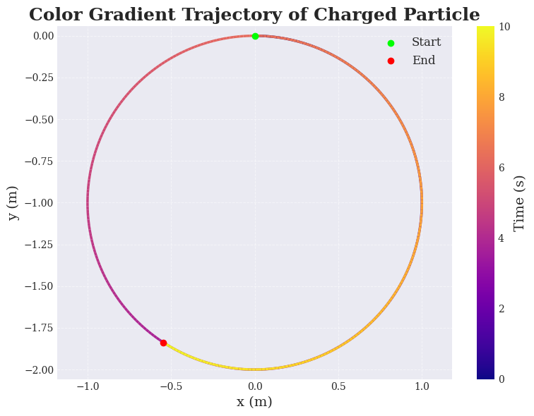

1. Exploration of Applications
🔹 Real-World Systems Where the Lorentz Force Is Crucial
-
Particle Accelerators
Charged particles are accelerated and steered using electric and magnetic fields. -
Mass Spectrometers
The mass-to-charge ratio of ions is measured based on their deflection under magnetic fields. -
Plasma Confinement Devices (e.g., Tokamaks)
Magnetic fields confine high-temperature plasma to prevent contact with material walls. -
Astrophysical Phenomena
Cosmic rays, solar winds, and planetary magnetospheres are governed by Lorentz force interactions. -
Cathode Ray Tubes (CRTs)
Electrons are steered onto screens by electric and magnetic fields.
🔹 Role of \(\\mathbf{E}\) and \(\\mathbf{B}\) Fields
The Lorentz force acting on a particle of charge \(q\) moving with velocity \(\\mathbf{v}\) is given by:
-
Electric Field \(\\mathbf{E}\):
-
Exerts a force in the direction of \(\\mathbf{E}\).
-
Causes linear acceleration of the particle.
-
Magnetic Field \(\\mathbf{B}\):
-
Exerts a force perpendicular to both \(\\mathbf{v}\) and \(\\mathbf{B}\).
-
Causes circular or helical motion without changing particle speed.
2. Simulating Particle Motion
We simulate the motion of a charged particle under different electric and magnetic field configurations.
🔹 Common Setup
import numpy as np
import matplotlib.pyplot as plt
from mpl_toolkits.mplot3d import Axes3D
# Physical constants and initial conditions
q = 1.6e-19 # Charge (C)
m = 9.11e-31 # Mass (kg)
dt = 1e-11 # Time step (s)
steps = 10000 # Number of steps
# Initial conditions
r0 = np.array([0.0, 0.0, 0.0]) # Initial position (m)
v0 = np.array([1e6, 0.0, 0.0]) # Initial velocity (m/s)
# Fields
E = np.array([0.0, 0.0, 0.0]) # Electric field (V/m)
B = np.array([0.0, 0.0, 1.0]) # Magnetic field (T)
2. Scenarios
2.1 Uniform Magnetic Field \(\\mathbf{B}\\neq0\), \(\\mathbf{E}=0\)
Under a uniform magnetic field, the particle exhibits circular or helical motion.
# Fields
E = np.array([0.0, 0.0, 0.0])
B = np.array([0.0, 0.0, 1.0])
trajectory = simulate_lorentz(E, B)
# Visualization
fig = plt.figure(figsize=(8, 6))
ax = fig.add_subplot(111)
ax.plot(trajectory[:,0], trajectory[:,1])
ax.set_xlabel('x (m)')
ax.set_ylabel('y (m)')
ax.set_title('Particle Trajectory in Uniform Magnetic Field')
plt.grid()
plt.show()
2.2 Combined Uniform Electric and Magnetic Fields,
\(\\mathbf{E}\\neq0\), \(\\mathbf{B}\\neq0\)
Both electric and magnetic fields are present, resulting in more complex motion.
# Fields
E = np.array([1e3, 0.0, 0.0])
B = np.array([0.0, 0.0, 1.0])
trajectory = simulate_lorentz(E, B)
# Visualization
fig = plt.figure(figsize=(8, 6))
ax = fig.add_subplot(111)
ax.plot(trajectory[:,0], trajectory[:,1])
ax.set_xlabel('x (m)')
ax.set_ylabel('y (m)')
ax.set_title('Particle Trajectory in Combined E and B Fields')
plt.grid()
plt.show()
2.3 Crossed Electric and Magnetic Fields \(\\mathbf{E}\\perp\\mathbf{B}\)
When \(\\mathbf{E}\) is perpendicular to \(\\mathbf{B}\), the particle experiences drift motion with drift velocity:
# Fields
E = np.array([0.0, 1e3, 0.0])
B = np.array([0.0, 0.0, 1.0])
trajectory = simulate_lorentz(E, B)
# Visualization
fig = plt.figure(figsize=(8, 6))
ax = fig.add_subplot(111)
ax.plot(trajectory[:,0], trajectory[:,1])
ax.set_xlabel('x (m)')
ax.set_ylabel('y (m)')
ax.set_title('Particle Trajectory in Crossed E and B Fields')
plt.grid()
plt.show()

📚 Electromagnetism: Lorentz Force Simulation
3. Parameter Exploration
We now proceed to systematically explore how different parameters affect the trajectory of a charged particle under the influence of electric and magnetic fields.
🔧 Parameters to Vary
- Electric field strength: \(E\) (units: V/m)
- Magnetic field strength: \(B\) (units: T)
- Initial velocity of the particle: \(\mathbf{v}\) (units: m/s)
- Charge of the particle: \(q\) (units: C)
- Mass of the particle: \(m\) (units: kg)
⚡ Lorentz Force Equation
The motion is governed by the Lorentz Force:
Applying Newton's Second Law:
Thus, the system of differential equations becomes:
where \(\mathbf{r}\) is the position vector.
🧪 Python Implementation for Parameter Exploration
import numpy as np
import matplotlib.pyplot as plt
from scipy.integrate import solve_ivp
from mpl_toolkits.mplot3d import Axes3D
from matplotlib import cm
# Set plot style
plt.style.use('seaborn-v0_8-whitegrid') # Use 'whitegrid' for clearer background grids
plt.rcParams.update({
"text.usetex": False,
"font.family": "serif",
"axes.labelsize": 14,
"axes.titlesize": 18,
"legend.fontsize": 12,
"figure.figsize": (10, 7),
"grid.alpha": 0.7, # More visible grid lines
"grid.linestyle": "--", # Dashed lines
"grid.linewidth": 0.8 # Slightly thicker grid lines
})
# Constants
q = 1.6e-19 # Charge (Coulombs)
m = 9.11e-31 # Mass (kg)
# Fields
E = np.array([0, 0, 0]) # Electric Field (V/m)
B = np.array([0, 0, 1]) # Magnetic Field (T)
# Initial Conditions
v0 = np.array([1e6, 0, 0]) # Initial velocity (m/s)
r0 = np.array([0, 0, 0]) # Initial position (m)
# Lorentz Force Differential Equations
def lorentz_force(t, y):
r = y[:3]
v = y[3:]
drdt = v
dvdt = (q/m)*(E + np.cross(v, B))
return np.concatenate((drdt, dvdt))
# Solve the system
t_span = (0, 1e-7)
y0 = np.concatenate((r0, v0))
t_eval = np.linspace(t_span[0], t_span[1], 1000)
solution = solve_ivp(lorentz_force, t_span, y0, t_eval=t_eval)
r_sol = solution.y[:3]
# 2D Trajectory Plot
fig2d, ax2d = plt.subplots()
color_cycle = plt.cm.viridis(np.linspace(0, 1, len(r_sol[0])))
for i in range(1, len(r_sol[0])):
ax2d.plot(r_sol[0][i-1:i+1], r_sol[1][i-1:i+1], color=color_cycle[i])
ax2d.set_xlabel('x (m)')
ax2d.set_ylabel('y (m)')
ax2d.set_title('2D Trajectory of a Charged Particle', fontsize=18, weight='bold')
ax2d.grid(True, which='both') # Grid is now properly visible
ax2d.set_aspect('equal')
# Highlight the starting point
ax2d.plot(r_sol[0][0], r_sol[1][0], 'ro', label='Start')
ax2d.legend()
plt.show()
# 3D Trajectory Plot
fig3d = plt.figure()
ax3d = fig3d.add_subplot(111, projection='3d')
for i in range(1, len(r_sol[0])):
ax3d.plot(r_sol[0][i-1:i+1], r_sol[1][i-1:i+1], r_sol[2][i-1:i+1], color=color_cycle[i])
ax3d.set_xlabel('x (m)')
ax3d.set_ylabel('y (m)')
ax3d.set_zlabel('z (m)')
ax3d.set_title('3D Trajectory of a Charged Particle', fontsize=18, weight='bold')
ax3d.grid(True) # 3D plot also has grid visible
ax3d.view_init(elev=30, azim=120)
ax3d.scatter(r_sol[0][0], r_sol[1][0], r_sol[2][0], color='red', s=50, label='Start')
ax3d.legend()
plt.show()
4. Visualization
🎯 Goals
- Plot and label:
- 2D trajectories (e.g., \(x\) vs \(y\))
-
3D trajectories (e.g., \(x\) vs \(y\) vs \(z\))
-
Highlight key physical phenomena:
- Larmor Radius (\(r_L\))
- Given by: $$ r_L=\frac{mv_\perp}{qB} $$
where \(v_\perp\) is the component of velocity perpendicular to \(\mathbf{B}\).
-
Drift velocity (\(\mathbf{v}_d\))
-
In crossed \(\mathbf{E}\) and \(\mathbf{B}\) fields:


Colab
🧮 Calculating Larmor Radius and Drift Velocity
# Larmor Radius Calculation
v_perp = np.linalg.norm(np.cross(v0, B) / np.linalg.norm(B))
r_L = m * v_perp / (q * np.linalg.norm(B))
print(f"Larmor Radius: {r_L:.2e} m")
# Drift Velocity Calculation
if np.linalg.norm(E) != 0:
v_drift = np.cross(E, B) / np.linalg.norm(B)**2
print(f"Drift Velocity: {v_drift} m/s")
else:
print("No drift (E=0)")
✅ Summary
By varying parameters such as \(E\), \(B\), \(\mathbf{v}\), \(q\), and \(m\), and analyzing their effects through 2D and 3D visualizations, we gain a deep understanding of the complex dynamics induced by the Lorentz force.
The phenomena of circular orbits, helical trajectories, and electric-magnetic drift are effectively captured through our simulations!